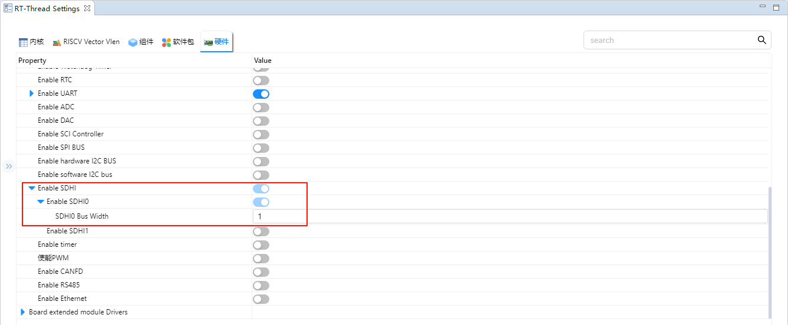

SD Card File System Example Guide
中文 | English
Introduction
This example uses an SD card as the storage device for the file system, demonstrating how to create a file system on an SD card (format the card) and mount it to the RT-Thread operating system.
After the file system is successfully mounted, it demonstrates how to use the file system functions to perform operations on directories and files.
SD Card Introduction
1. Overview
SD Card (Secure Digital Card) is a small, portable non-volatile storage device widely used in embedded systems, cameras, mobile phones, data loggers and other scenarios.
An SD card consists of a controller + NAND Flash memory chip, communicating with the host through a standard interface.
Main features:
Compact and lightweight, typically 32 × 24 × 2.1 mm (standard card)
Uses non-volatile flash memory (NAND Flash) for data storage
Supports hot-plug and power-off protection
2. SD Card Types
By Size
Standard SD Card: 32 × 24 mm
Mini SD: 21.5 × 20 mm
Micro SD (TF Card): 15 × 11 mm, most commonly used
By Capacity
Type
Capacity Range
SDSC
1 MB ~ 2 GB
SDHC
4 GB ~ 32 GB
SDXC
32 GB ~ 2 TB
SDUC
2 TB ~ 128 TB
By Speed Class
Class 2/4/6/10: Minimum write speeds of 2, 4, 6, 10 MB/s respectively
UHS (Ultra High Speed): UHS-I/UHS-II/UHS-III, speeds up to 312 MB/s
Video Speed Class (V6/V10/V30/V60/V90): Suitable for high-definition video recording
3. SD Card Interfaces
SPI Mode
Uses SPI bus (MISO, MOSI, SCK, CS)
Simple and easy to use, suitable for MCUs
Lower data transfer rate
SD Mode (1-bit / 4-bit)
Uses dedicated SD bus
Supports 1-bit or 4-bit data lines
Higher speed than SPI mode
UHS Mode
Supports high-speed data transfer, commonly used in video cameras and high-performance embedded applications
4. Working Principle
Command/Data Transfer
Host sends commands (CMD) via SD card protocol
Card returns response (R1, R2, etc.)
Read/write data blocks (Block), typically 512 Byte per block
Controller Management
Internal controller handles bad block management, error correction (ECC), logical-to-physical address mapping
External host does not need to manage NAND Flash characteristics directly
Data Storage
Data stored in NAND Flash
Supports multiple erase/write cycles and endurance management (typical lifespan 100,000 erase/write cycles)
5. SD Card Performance Specifications
Parameter |
Description |
|---|---|
Capacity |
1 GB ~ 128 TB |
Data Block Size |
512 Byte (standard) |
Interface Speed |
SPI/SD 1-bit/4-bit/UHS |
Max Transfer Speed |
25 MB/s (standard), 312 MB/s (UHS-III) |
Operating Voltage |
3.3 V (some Micro SD cards support 1.8 V) |
Operating Temperature |
-25°C ~ 85°C (industrial grade) |
Durability |
Erase/write cycles 10^4 ~ 10^5 |
6. SD Card Application Scenarios
Consumer Electronics
Mobile phones, tablets, digital cameras, video camera storage
Embedded Systems
MCU/FPGA data storage
Log recording, configuration file storage
Industrial Applications
Industrial controllers, data acquisition systems
Industrial-grade SD cards can be used in high-temperature environments
Audio/Video Applications
High-speed video recording (UHS/V Class)
Automotive Electronics
Dash cameras, navigation system data storage
RA8 Series SDHI Module Overview
The RA8 series MCU features a built-in high-performance SDHI module dedicated to high-speed communication with SD/SDHC/SDXC cards, supporting both SPI mode and SD/SDIO mode.
1. General Features
SD Standard Support
SD v1.x / v2.x / SDHC / SDXC
Supports SPI mode and SD/MMC mode
High-Speed Data Transfer
Up to 50 MHz SDCLK (depending on MCU clock configuration)
Supports 1-bit/4-bit data bus
Automatic Command and Data Transfer
Supports DMA transfer mode, reducing CPU usage
Automatic command sequence generation (CMD0~CMD59)
Error Detection
CRC7 command check, CRC16 data check
Timeout detection, response error identification
Interrupt Support
Card insertion/removal detection interrupt
Command completion interrupt
Data transfer completion interrupt
Error interrupt
2. SDHI Module Architecture
The RA8 SDHI module mainly contains the following sub-modules:
Command Control Unit
Responsible for sending SD commands (CMD0~CMD59)
Handles command responses (R1, R2, R3, R7, etc.)
Supports command timeout detection and CRC verification
Data Transfer Unit
Implements data transmission/reception through internal FIFO or DMA
Supports block read/write, maximum 512-byte blocks
Supports single-block/multi-block transfer modes
Clock and Bus Control
SDCLK generation and frequency division
1-bit or 4-bit bus switching
Configurable high/low level hold time
Card Detection and Power Control
Detects SD card insertion/removal status
Can control card power switch (if supported)
Interrupt and Event Control Unit
Command completion interrupt
Data transfer completion interrupt
Error interrupt
Card insertion/removal interrupt
3. SDHI Working Principle
Initialization Phase
Detect SD card insertion
Send CMD0, CMD8 to initialize card
Query card capacity and version information
Command Sending
Host sends commands to card
Card returns response, SDHI module verifies CRC and triggers interrupt
Data Transfer
During read/write data blocks, high-speed transfer through FIFO or DMA
Supports single-block or multi-block operations
Error Handling
Timeout, CRC errors, response errors, etc.
SDHI module can trigger error interrupts, handled by driver retry or exception handling
FSP Configuration
Create a new stack, select r_sdhi and configure sdhi0 as follows:


RT-Thread Settings Configuration
Enable SD card file system in the configuration.

Enable SDHI0 and set SDHI0 Bus Width to 1.

Example Project Description
This routine file system initialization source in ./board/ports/drv_filesystem.c ：
#include <rtthread.h>
#if defined(BSP_USING_FILESYSTEM)
#include <dfs_romfs.h>
#include <dfs_fs.h>
#include <dfs_file.h>
#if DFS_FILESYSTEMS_MAX < 4
#error "Please define DFS_FILESYSTEMS_MAX more than 4"
#endif
#if DFS_FILESYSTEM_TYPES_MAX < 4
#error "Please define DFS_FILESYSTEM_TYPES_MAX more than 4"
#endif
#define DBG_TAG "app.filesystem"
#define DBG_LVL DBG_INFO
#include <rtdbg.h>
#ifdef BSP_USING_FS_AUTO_MOUNT
#ifdef BSP_USING_SDCARD_FATFS
static int onboard_sdcard_mount(void)
{
if (dfs_mount("sd", "/sdcard", "elm", 0, 0) == RT_EOK)
{
LOG_I("SD card mount to '/sdcard'");
}
else
{
LOG_E("SD card mount to '/sdcard' failed!");
rt_pin_write(0x000D, PIN_LOW);
}
return RT_EOK;
}
#endif /* BSP_USING_SDCARD_FATFS */
#endif /* BSP_USING_FS_AUTO_MOUNT */
#ifdef BSP_USING_FLASH_FS_AUTO_MOUNT
#ifdef BSP_USING_FLASH_FATFS
#define FS_PARTITION_NAME "filesystem"
static int onboard_fal_mount(void)
{
/* 初始化 fal 功能 */
extern int fal_init(void);
extern struct rt_device* fal_mtd_nor_device_create(const char *parition_name);
fal_init ();
/* 在 ospi flash 中名为 "filesystem" 的分区上创建一个块设备 */
struct rt_device *mtd_dev = fal_mtd_nor_device_create (FS_PARTITION_NAME);
if (mtd_dev == NULL)
{
LOG_E("Can't create a mtd device on '%s' partition.", FS_PARTITION_NAME);
return -RT_ERROR;
}
else
{
LOG_D("Create a mtd device on the %s partition of flash successful.", FS_PARTITION_NAME);
}
/* 挂载 ospi flash 中名为 "filesystem" 的分区上的文件系统 */
if (dfs_mount (FS_PARTITION_NAME, "/fal", "lfs", 0, 0) == 0)
{
LOG_I("Filesystem initialized!");
}
else
{
dfs_mkfs ("lfs", FS_PARTITION_NAME);
if (dfs_mount ("filesystem", "/fal", "lfs", 0, 0) == 0)
{
LOG_I("Filesystem initialized!");
}
else
{
LOG_E("Failed to initialize filesystem!");
rt_pin_write(0x000D, PIN_LOW);
}
}
return RT_EOK;
}
#endif /*BSP_USING_FLASH_FATFS*/
#endif /*BSP_USING_FLASH_FS_AUTO_MOUNT*/
const struct romfs_dirent _romfs_root[] =
{
#ifdef BSP_USING_SDCARD_FATFS
{ROMFS_DIRENT_DIR, "sdcard", RT_NULL, 0},
#endif
#ifdef BSP_USING_FLASH_FATFS
{ ROMFS_DIRENT_DIR, "fal", RT_NULL, 0 },
#endif
};
const struct romfs_dirent romfs_root =
{
ROMFS_DIRENT_DIR, "/", (rt_uint8_t*) _romfs_root, sizeof(_romfs_root) / sizeof(_romfs_root[0])
};
static int filesystem_mount(void)
{
#ifdef RT_USING_DFS_ROMFS
if (dfs_mount(RT_NULL, "/", "rom", 0, &(romfs_root)) != 0)
{
LOG_E("rom mount to '/' failed!");
}
/* 确保块设备注册成功之后再挂载文件系统 */
rt_thread_delay(500);
#endif
#ifdef BSP_USING_FS_AUTO_MOUNT
onboard_sdcard_mount();
#endif /* BSP_USING_FS_AUTO_MOUNT */
#ifdef BSP_USING_FLASH_FS_AUTO_MOUNT
onboard_fal_mount ();
#endif
return RT_EOK;
}
INIT_COMPONENT_EXPORT(filesystem_mount);
#endif /* defined(BSP_USING_FILESYSTEM)*/
Compilation & Download
RT-Thread Studio: In RT-Thread Studio’s package manager, download the Titan Board resource package, create a new project, and compile it.
After compilation, connect the development board’s USB-DBG interface to the PC and download the firmware to the development board.
Run Effect
Press the reset button to restart the development board, wait for the SD to mount, and enter the file system directory of the SD card to view the files on the SD card.